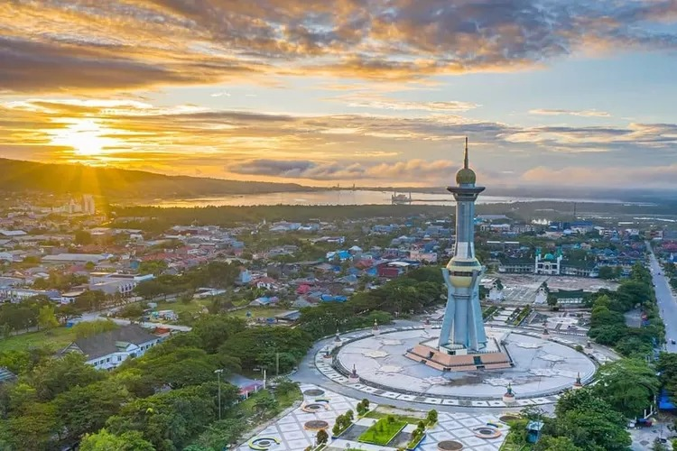

Dokumentasi Kota Kendari
Kota Kendari merupakan ibu kota dari Provinsi Sulawesi Tenggara yang terletak di pesisir timur Pulau Sulawesi. Kota ini didirikan pada awal abad ke-19 oleh kerajaan lokal Tolaki yang kemudian berkembang pesat selama masa penjajahan Belanda. Kendari dikenal sebagai pelabuhan penting dan pusat perdagangan di kawasan timur Indonesia. Selengkapnya